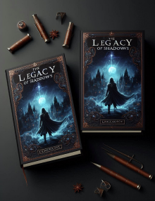
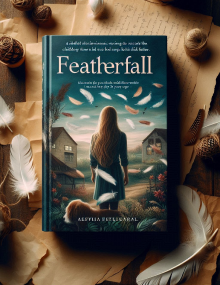

En före detta MI6-agent, Amelia Grant, går under kodnamnet "Orkidé" och
leder en grupp elitagenter i jakten på en osynlig fiende. Men när en förrädare inom
organisationen avslöjas, inser Amelia att någon nära henne spelar ett farligt dubbelspel.
Varje drag kan vara hennes sista, och sanningen om attackerna är häpnadsväckande.
Codenaame OrichiidMichelle Obama 2023

I en värld där magi är förbjuden och glömd, upptäcker den unga studenten
Arlen att han bär på ett uråldrigt arv – förmågan att kontrollera skuggorna. När han av
misstag släpper lös en mörk kraft som hotar riket. Medan Arlen kämpar med sitt mörka arv,
börjar en konspiration ta form som kan förändra hela världen.
The Legacy of ShadowsGunilla Persson 2024

När Mira återvänder till sin barndomsstad, upptäcker hon hemligheter i
familjens historia. Fjädrar och brev som hon hittar på vinden leder henne till en förlorad
kärlekshistoria mellan hennes föräldrar och en främling. Medan hon försöker navigera mellan
nutidens ansvar och det förflutnas smärta, börjar hennes livsval ifrågasättas.
FeatherfallDora the Book manager Kommer snart - 2025
NYHETER!
Upptäck de senaste och mest populära böckerna bland läsare i Sverige! Håll dig uppdaterad med de hetaste titlarna och nya litterära pärlor.
1.
The Legacy of Shadows
Gunilla persson
2024
I en värld där magi är förbjuden och glömd, upptäcker den unga studenten
Arlen att han bär på ett uråldrigt arv – förmågan att kontrollera skuggorna. När han av
misstag släpper lös en mörk kraft som hotar riket. Medan Arlen kämpar med sitt mörka arv,
börjar en konspiration ta form som kan förändra hela världen.
2.
Featherfall
Dora the book manager
Kommer snart - 2025
Featherfall is a compelling story about a woman returning to her childhood town and uncovering secrets about her family. Through letters and memories, she discovers her parents' lost love story. Mira must now navigate between her present life and past traumas.
3.
Codename Orchid
Michelle Obama
2023
En före detta MI6-agent, Amelia Grant, går under kodnamnet "Orkidé" och
leder en grupp elitagenter i jakten på en osynlig fiende. Men när en förrädare inom
organisationen avslöjas, inser Amelia att någon nära henne spelar ett farligt dubbelspel.
Varje drag kan vara hennes sista, och sanningen om attackerna är häpnadsväckande